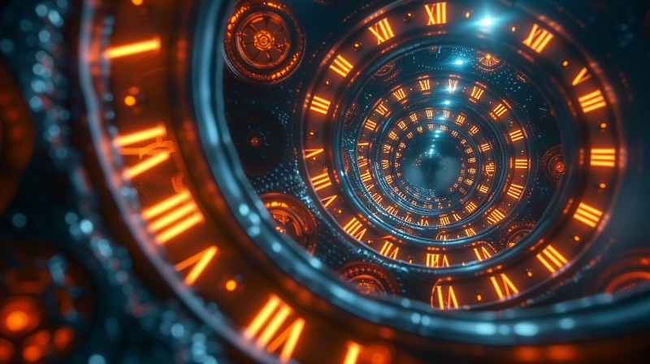

Welcome to the Age of Chronos

Figure 1: When the manipulation of space/time becomes a standard every day occurance.
Step into a future, thousands of years ahead, where the fabric of spacetime is as malleable as clay, shaped by technology that surpasses the wildest dreams of physicists like Einstein and Hawking—welcome to the Age of Chronos.
The Chrono Wars: Enter the era of the Chrono Wars—a time of unprecedented conflict and technological advancement. As star systems compete for supremacy, the mastery of time dilation technology becomes the ultimate weapon and economic boon. This period is marked by rapid innovation, the rise and fall of empires, and the birth of a new socio-political landscape.
Prelude to the Commonwealth: Discover the chaotic years leading up to the formation of the Setsafar Commonwealth. As old powers crumble and new alliances form, visionary leaders and rogue factions vie to shape the destiny of countless worlds. This is a story of ambition, desperation, and the relentless pursuit of control over time itself.
Technological Marvels and Catastrophes: Explore the breakthroughs in quantum engineering and the harrowing consequences of their misuse. From the creation of automata capable of withstanding the ravages of accelerated time, to the devastating toll of unchecked time dilation zones, this era is as much a testament to human ingenuity as it is a cautionary tale.
Cultural and Societal Shifts: The manipulation of time has not only transformed economies and warfare but has also reshaped societies. Delve into the cultural renaissance sparked by new technologies, and the ethical dilemmas faced by civilizations as they grapple with the power to alter the flow of time.
Begin Your Exploration
Step into The Age of Chronos and experience the pivotal events that set the stage for the future. From the innovators who dared to bend time to their will, to the communities struggling to find their place in an ever-changing cosmos, this is a saga of power, transformation, and the enduring human spirit.